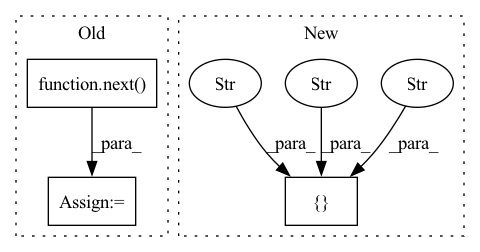

Pattern ID :10041
Before Change
for acml_index in range(self.accumulation_steps):
try:
if self.cr or self.conditional_strategy == "NT_Xent_GAN":
real_images, real_labels, real_images_aug = next( train_iter)
else:
real_images, real_labels = next(train_iter)
except StopIteration:
train_iter = iter(self.train_dataloader)After Change
raise NotImplementedError
consistency_loss = self.l2_loss(dis_out_real, dis_out_real_aug)
if self.conditional_strategy in [ "ACGAN", "NT_Xent_GAN" , "Proxy_NCA_GAN" , "ContraGAN" ]:
consistency_loss += cls_consistency_loss
dis_acml_loss += self.cr_lambda*consistency_loss
In pattern: SUPERPATTERN
Frequency: 3
Non-data size: 3
Instances Fragment ID: 35729641
Project Name: postech-cvlab/pytorch-studiogan
Commit Name: 8f3a4967366758076c1561e1af227298b5746fd5
Time: 2020-09-04
Author: first287@naver.com
File Name: trainer.py
M Class Name: Trainer
N Class Name: Trainer
M Method Name: run(3)
N Method Name: run(3)
M Parent Class:
N Parent Class:
M File Name: trainer.py
N File Name: trainer.py
M Start Line: 206
M End Line: 430
N Start Line: 222
N End Line: 432
Before Change
loader = self.dataset.get_dataloader(mode="train", batch_size=self.reflect_num, classes=[self.target_class],
shuffle=True, num_workers=0, pin_memory=False)
self.reflect_set, self.reflect_labels = next( iter(loader)) // _images, _labels = next(iter(loader))
self.W = torch.zeros(reflect_num)
self.trainset = self.dataset.get_dataset(mode="train")After Change
def __init__(self, candidate_num: int = 100, m: int = 20, selection_iter: int = 10, inner_epoch: int = 1, **kwargs):
super().__init__(**kwargs)
self.param_list["reflection"] = ["candidate_num" , "selection_iter" , "m", "inner_epoch" ]
self.candidate_num: int = candidate_num
self.selection_iter: int = selection_iter
self.m: int = m Fragment ID: 35729651
Project Name: ain-soph/trojanzoo
Commit Name: 3b0c9ae8b0af03ee032185c658a6eaed04bc141b
Time: 2020-09-03
Author: ain-soph@live.com
File Name: trojanzoo/attack/backdoor/reflection_backdoor.py
M Class Name: Reflection_Backdoor
N Class Name: Reflection_Backdoor
M Method Name: __init__(5)
N Method Name: __init__(4)
M Parent Class: BadNet
N Parent Class: BadNet
M File Name: trojanzoo/attack/backdoor/reflection_backdoor.py
N File Name: trojanzoo/attack/backdoor/reflection_backdoor.py
M Start Line: 28
M End Line: 52
N Start Line: 19
N End Line: 25
Before Change
)
// Extract xvectors from a validation sample
valid_x, valid_y = next( iter(valid_set.get_dataloader()))
print("Extracting Xvector from a sample validation batch!")
xvectors = ext_brain.extract(valid_x)
print("Extracted Xvector.Shape: ", xvectors.shape)
After Change
dset.add_dynamic_item(
"spk_id_enc", encoder.encode_sequence_torch, "spk_id"
)
dset.set_output_keys(["id" , "wav" , "spk_id_enc" ])
// Object initialization for training xvector model
xvect_brain = XvectorBrain( Fragment ID: 35729647
Project Name: speechbrain/speechbrain
Commit Name: d656bc6618227a593465ff1a507ec955172eb4ac
Time: 2020-12-20
Author: aku.rouhe@aalto.fi
File Name: recipes/minimal_examples/neural_networks/Xvector/example_xvector_experiment.py
M Class Name: AnonimousClass
N Class Name: AnonimousClass
M Method Name: main(0)
N Method Name: main(0)
M Parent Class:
N Parent Class:
M File Name: recipes/minimal_examples/neural_networks/Xvector/example_xvector_experiment.py
N File Name: recipes/minimal_examples/neural_networks/Xvector/example_xvector_experiment.py
M Start Line: 91
M End Line: 106
N Start Line: 84
N End Line: 120